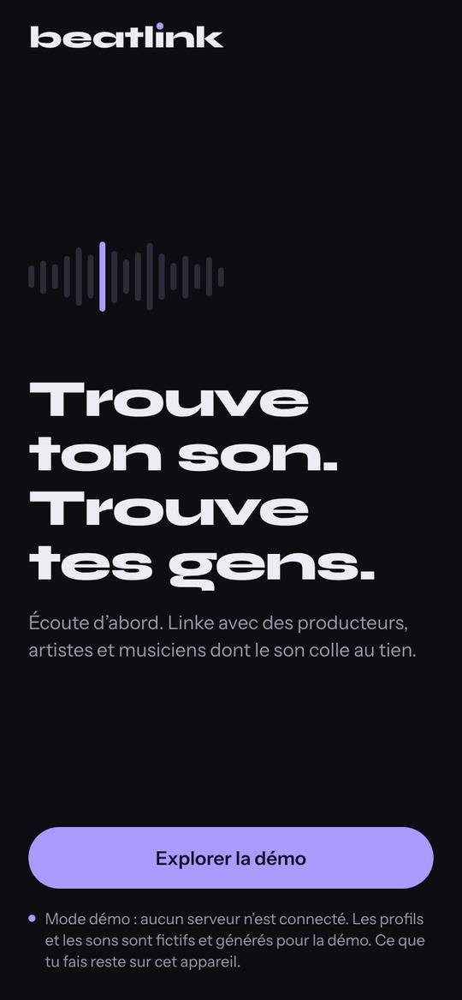
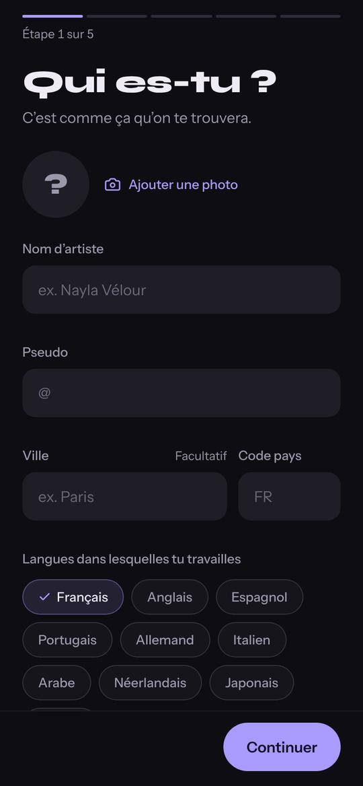
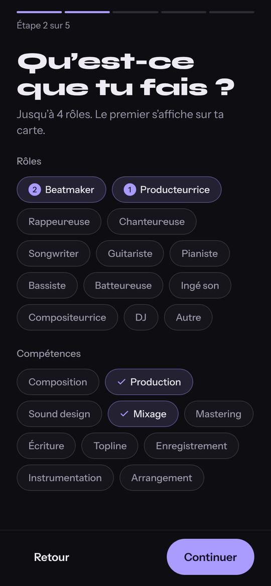
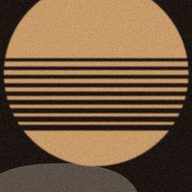

BEATLINK · Dossier stratégique de refonte · 15 novembre 2026
Le produit dit « écoute d'abord ». L'écran dit « regarde d'abord ».
Audit complet de l'existant, contre-analyse de chaque hypothèse du brief, trois directions artistiques réellement différentes, une recommandation tranchée et un prototype de sept écrans comparé à l'application actuelle. Cette page applique elle-même la direction recommandée.
Phases 1 à 6 livréesAucune ligne de code de l'app modifiéeEn attente de ta validation
5,6note globale sur 10. Le produit vaut plus que ce qu'il montre.
1,31contraste de la waveform au repos (minimum requis : 3). La signature du produit est le détail le moins visible.
9chantiers P0 avant la bêta. Aucun ne touche au schéma de la base.
3directions artistiques. Recommandée : Pochette.
00
L'essentiel en une minute
On ne repart pas de zéro. Les fondations sont meilleures que la moyenne des MVP : sécurité des données, compatibilité explicable, messagerie après consentement, lecteur audio unique, mode démo honnête. La refonte porte sur la couche visuelle (jetons et une douzaine de composants) et sur trois parcours : Découvrir, le profil et l'après-Link.
Le vrai problème n'est ni la police ni la lavande : le son n'est pas le héros de l'écran. La carte Découvrir consacre environ la moitié de l'écran à une image, la waveform est quasi invisible au repos et n'existe pas du tout pour les sons importés depuis un téléphone. Tant que ce n'est pas réglé, aucune police ne rendra BEATLINK « musical ».
Direction recommandée : « Pochette ». L'esthétique de la pochette de disque et des notes de pochette (les crédits imprimés au dos d'un album) : noirs chauds, noms d'artistes en serif, données musicales en chasse fixe, sons carrés et personnes rondes, et une règle stricte : la lavande ne s'allume que quand quelque chose joue.
Typographie : je rejette Space Grotesk + Geist. Le duo est propre mais lit « startup tech », exactement ce que tu veux éviter. Je propose Instrument Serif pour les noms, Instrument Sans (déjà intégrée) pour l'interface, DM Mono pour BPM, tonalités et durées. Syne quitte l'application : le logo devient un dessin vectoriel.
Un risque hors design passe avant tout : le nom. Une app « BeatLink » existe déjà dans la même catégorie. Dessiner un logo définitif avant de trancher serait du travail jeté. Je propose de construire tout le système sans dépendre du nom, et de figer le logo en dernier.
01 · Diagnostic général
Un produit juste, une interface qui raconte autre chose
J'ai relu le dossier de production, les six documents de docs/, les jetons de mobile/src/theme/tokens.ts, les 14 composants d'interface, les composants audio et profil, les routes Expo Router, la fonction SQL discover_feed et les 26 captures de l'état actuel. J'ai mesuré les contrastes, compté les cibles tactiles, et recalculé la compatibilité réelle entre les profils de démo avec le code du produit.
Ce qui est solide. Le positionnement tient en une phrase et le code le respecte : on écoute, on comprend pourquoi un profil est proposé, on ne peut écrire qu'après un accord mutuel. La compatibilité est calculée de la même façon côté serveur et côté application, et elle s'explique en mots. C'est rare et c'est un avantage concurrentiel réel.
Ce qui ne va pas. L'interface contredit le positionnement à trois endroits :
Regarder avant d'écouter. La carte Découvrir reprend la grammaire des applis de rencontre : grande image, nom géant, quatre boutons ronds dont une croix, geste de balayage. Le son tient dans une bande étroite sous l'image.
Un système monocorde. Tout est carte sombre arrondie, souvent une carte dans une carte. La lavande sert à neuf usages différents (bouton principal, Link, points de compatibilité, barres de score, disponibilité, tête de lecture, bordure d'ajout, pastille d'onglet, non-lus), donc elle ne signifie plus rien. Syne ExtraBold s'applique partout, y compris au texte écrit par les utilisateurs.
Une collaboration qui s'arrête au message. Après le Link, il n'y a qu'une messagerie. Le « projet » est un titre et un statut. Le troisième pilier (« transformer une rencontre en collaboration ») est le moins incarné de l'application.
Conclusion. Pas de refonte totale : ce serait détruire ce qui marche. Une refonte ciblée et profonde : nouveaux jetons, une douzaine de composants revus, trois parcours restructurés, et l'audio remis au centre, techniquement compris (waveform calculée pour tous les sons).
02 · Notes
5,6 sur 10, et pourquoi
Notes absolues, pas « pour un MVP ». La moyenne est pondérée : l'audio, la découverte et l'identité comptent double, parce que ce sont eux qui font revenir un créateur.
03 · Dix défauts majeurs
Ce qui coûte le plus cher aujourd'hui
Classés par impact sur l'usage réel. Chaque défaut est mesuré ou observé sur les captures et dans le code, pas supposé.
1
La waveform est le maillon le plus faible Critique
Au repos, les barres (fader #2E2B38) sur la carte (desk #16151B) ont un contraste de 1,31:1, loin du minimum de 3:1 pour un élément graphique. Et sur iOS et Android, analyseAudio() renvoie waveform: null : tout son importé depuis un téléphone s'affiche comme un simple trait.
Conséquence : l'élément censé incarner « écoute d'abord » est invisible sur l'écran principal et absent pour la majorité des sons réels.
2
Découvrir ressemble à une appli de rencontre Critique
Image sur environ la moitié de l'écran, nom en Syne de 44 px, rangée de quatre boutons ronds avec une croix, balayage gauche-droite pour décider. Pire : la fonction discover_feed trie par score sans tenir compte de la présence de sons, donc un profil sans aucun son peut apparaître en premier.
3
Syne ExtraBold partout Majeur
Utilisée de 18 à 44 px pour les titres d'écran, les noms, « Nouveau link », et même pour la phrase « Cherche » écrite par l'utilisateur. Très large (à 34 px, un nom de 12 lettres occupe presque toute la largeur), elle crie à chaque écran et transforme du texte courant en affiche. Ton intuition est juste sur ce point.
4
Le violet est partout, donc l'accent n'existe plus Majeur
Les fonds, surfaces et gris sont teintés violet ; booth, desk et rack sont à 1,07 et 1,16:1 les uns des autres, donc les niveaux de surface ne se lisent pas. La lavande a neuf usages. Résultat : une impression de « dark mode violet » générique, pas de matière.
5
La compatibilité perd sa crédibilité par endroits Majeur
Pour une productrice R&B de démo, 7 profils sur 11 sont « À explorer » ; pour un rappeur drill, 9 sur 12, et aucun « Très compatible ». Le profil de Mira Blaze affiche « À explorer » avec trois raisons positives, sans dire l'essentiel : aucun genre en commun. Et l'écran détaillé affiche « 83 / 100 », la note précise que le principe des trois niveaux voulait éviter.
6
Deux lecteurs pour un seul son Majeur
Pendant la lecture sur Découvrir, la carte et le mini-player affichent le même titre en même temps. Le mini-player n'a pas de waveform et réduit la progression à un filet de 2 px. Il n'existe pas de lecteur plein écran.
7
L'onglet Links mélange quatre choses Majeur
Segments Links, Demandes, Projets, Sauvegardés, plus Reçues et Envoyées. « Links » apparaît dans « Links ». « Sauvegardés » est tronqué. Les projets, aboutissement du produit, sont au troisième segment. Les profils mis de côté sont séparés de la découverte où on les a trouvés.
8
« Projet démarré » ne débouche sur rien Majeur
Un projet est un titre et un statut dans une conversation : pas de brief, pas de référence, pas de version, pas de crédit. On promet une collaboration et on livre un fil de messages.
9
Un onboarding administratif Majeur
Cinq étapes de formulaire (avec code pays et mur de 14 langues) avant la première écoute. À l'étape identité, l'erreur de validation s'affiche sous le pli, hors de l'écran : on appuie sur Continuer et rien ne semble se passer. Le texte alterne « tu » et « vous » (« Vous êtes linkés. Dis bonjour. »).
10
Cibles tactiles, états et icônes approximatifs Moyen
Sélecteur d'extrait de 26 px sans zone élargie, segments de 36 px, chips de 38 px, suppression de 36 px (minimum 44). Aucun état « chargement » ni « indisponible » pour l'audio. Les messages éphémères apparaissent en haut et recouvrent les en-têtes. L'avion en papier, icône universelle de l'envoi de message, sert à « Proposer un projet ».
04 · Dix points forts à conserver
Ce qu'il ne faut surtout pas casser
1
Un positionnement net
Écoute d'abord, compatibilité expliquée, consentement avant le message. Trois idées simples, toutes réellement codées.
2
Une compatibilité explicable
Sept critères, même calcul en SQL et en TypeScript, raisons en langage naturel, aucun pourcentage sur la carte. Peu de concurrents osent cette transparence.
3
La messagerie après consentement
Personne ne reçoit de message sans avoir accepté. Décisif pour attirer les voix, surtout féminines, qui fuient les DM non sollicités.
4
Un lecteur audio unique
Un seul lecteur global, écoute continue, saut dans le son accessible aux lecteurs d'écran (rôle « ajustable »). Une bonne base pour un vrai lecteur.
5
Des fondations techniques sérieuses
Accès restreint ligne par ligne sur les 20 tables, fonctions serveur verrouillées, 16 tests unitaires, 25 tests d'intégration, parcours de bout en bout automatisés.
6
Un mode démo honnête
Douze créateurs fictifs, signalés « Profil démo » partout, sons et pochettes générés. Il respecte déjà ta règle 13.
7
Le vu-mètre de disponibilité
Trois barres au lieu d'une pastille verte : la meilleure idée identitaire actuelle. Je la généralise.
8
Des jetons centralisés
Couleurs, espacements, rayons et typo vivent dans un seul fichier. La refonte peut se faire couche par couche, sans réécrire chaque écran.
9
Le bilinguisme typé
432 clés français et anglais, aucune chaîne en dur. Les changements de vocabulaire proposés ici coûtent peu.
10
Sécurité et données personnelles
Blocage, signalement avec preuve conservée, export, suppression du compte, réduction des animations respectée. Rare à ce stade.
Phase 2 · Contre-analyse
Chaque hypothèse du brief, une par une
Quatre verdicts : ValidéeSous conditionsÀ modifierRejetée. Je ne suis pas d'accord avec toi sur trois points : Space Grotesk, Geist et le diagnostic sur Instrument Sans.
Hypothèse
Verdict
Pourquoi
Ce que je propose
Conserver intégralement « Session de nuit »
À modifier
L'idée est bonne (un studio dans le noir, une seule lumière). L'exécution est générique : fond violacé, cartes arrondies, accent omniprésent.
Garder le principe « une seule lumière : le son ». Changer la matière : noirs chauds, pochettes, mise en page éditoriale.
Rendre plus minimaliste
Sous conditions
Moins de conteneurs, oui. Moins de caractère, non : le minimalisme seul donne une interface à la Linear, donc un outil SaaS.
Retirer les cartes inutiles, garder une signature forte (pochettes, serif, waveform).
Ajouter une dimension éditoriale
Validée
C'est la piste la plus différenciante. Aucun concurrent direct (Vampr, BandLab) ne l'occupe.
Notes de pochette, crédits, liste de titres numérotée, citations « Cherche ».
S'inspirer du matériel audio professionnel
Sous conditions
Excellent pour les données et les états (vu-mètres, voyants, chiffres alignés). Mauvais comme esthétique globale : froid et intimidant pour une chanteuse qui débute.
Emprunter la rigueur (mono, niveaux, voyants), pas le skeuomorphisme.
Codes des pochettes, studios, logiciels
Validée
La pochette est l'objet visuel le plus chargé d'émotion en musique, et chaque créateur en a ou peut en générer une.
Pochettes carrées partout, pochette générée à partir du son quand il n'y en a pas.
Introduire une seconde couleur
RejetéeValidée
Rejetée comme second accent de marque : deux accents, c'est zéro signature. Validée comme couleurs fonctionnelles.
Ambre = en attente, menthe = disponible ou réussi, rouge = erreur. Jamais décoratives.
La lavande est-elle une signature assez forte ?
Sous conditions
Pas aujourd'hui : l'espace violet est saturé (Twitch, Discord, Deezer, Linear) et la lavande sert à tout dans l'app. Oui si elle devient rare et sémantique.
Règle unique : la lavande ne s'allume que pour ce qui joue. Le bouton principal devient blanc cassé.
La palette fait-elle « qualité » ou « dark mode » ?
À modifier
« Dark mode ». Quatre gris violacés presque identiques, pas de profondeur, pas de matière.
Noirs chauds à trois niveaux lisibles, texte « os », la couleur vient des pochettes.
Space Grotesk pour les titres
Rejetée
Lettres singulières (G, a, t) devenues la signature des sites crypto et IA de 2019 à 2025. Ne parle pas de musique. Les noms d'artistes en gras paraissent techniques.
Instrument Serif pour les noms et titres éditoriaux.
Geist Sans pour l'interface
Rejetée
Techniquement excellente, mais c'est la police de Vercel : elle signe « outil de développeur ». Gain de lisibilité nul par rapport à Instrument Sans déjà en place.
Garder Instrument Sans, réécrire la hiérarchie.
Syne uniquement pour le logo
Validée et poussée plus loin
Syne donne du caractère au mot-symbole, pas au texte. Mais charger une police pour cinq lettres coûte deux fichiers et un rendu variable selon les plateformes.
Logo dessiné en SVG (inspiré de Syne ou redessiné), Syne retirée de l'application.
Instrument Sans « trop classique »
Rejetée
Ce n'est pas la police, c'est la hiérarchie : presque tout est en 14 à 16 px, gris, même graisse, même rythme. Instrument Sans est une grotesque nette, légèrement étroite, rare en musique.
La conserver, avec une vraie échelle et des données en mono.
Chiffres tabulaires pour BPM et durées
Sous conditions
Le principe est bon, le rendu ne l'est pas : « 70 BPM C 0:20 » se lit comme une suite de signes, et « C » seul est ambigu.
DM Mono et un format explicite : « 70 BPM · Do majeur · 0:20 ».
La waveform comme signature
Validée, priorité n° 1
Oui, mais après avoir réglé la base : contraste et calcul pour tous les sons. Une signature invisible ou absente ne signe rien.
La forme réelle du son devient l'empreinte du créateur : pochettes générées, Nouveau Link, mini-player.
Trois niveaux plutôt qu'un pourcentage
Validée, avec deux corrections
Le total « 83 / 100 » de l'écran détaillé contredit le principe. Les seuils sur une somme pondérée produisent des niveaux peu crédibles.
Niveaux fondés sur des règles (rôle, genre, disponibilité) et « ce qui manque » toujours affiché.
Dix nouveaux filtres
À modifier
La plupart n'ont pas de donnée fiable derrière (ambiance, énergie) ou doublonnent l'existant (instrumentation, type de production).
Garder les quatre filtres actuels, ajouter le tempo plus tard. Détail en section 13.
Calls (appels à collaboration)
Validée, P1
Répond au vrai déséquilibre (beaucoup de beatmakers, peu de voix). Format court et borné dans le temps.
Un besoin, un son de référence, une échéance, des réponses audio.
Rooms (espaces de projet)
À modifier
Un espace séparé de la conversation crée un deuxième endroit où chercher les choses. Risque de dériver vers un DAW ou un Drive.
Enrichir le projet existant dans la conversation : brief, versions, statut, crédits. P2.
Collections
Rejetée
Utile à 5 % des utilisateurs, coûteux en interface. Les profils mis de côté suffisent au lancement.
« Mis de côté » dans Découvrir, plus une note privée par profil (P2).
Messages vocaux
Validée, P1
Fredonner une topline va plus vite que l'écrire. Différent d'une messagerie classique si on l'oriente vers le son.
Notes vocales de 60 s, puis commentaires horodatés sur un son (P2).
Disponibilité intelligente
Sous conditions
Les quatre états existants suffisent. Le vrai problème est le statut périmé : un profil « Cherche activement » inactif depuis deux mois.
Expiration automatique après 30 jours sans activité, avec rappel.
Crédits vérifiés
Sous conditions
Utile pour la confiance, mais seulement si les deux personnes confirment et seulement pour des projets nés sur BEATLINK.
Double confirmation, P2 ou P3 selon l'adoption.
05 · Analyse typographique
Le problème n'est pas Instrument Sans, c'est l'absence de hiérarchie
Ce que fait l'application aujourd'hui
Style
Police
Taille / interligne
Usage observé
Problème
hero
Syne 800
44 / 46
Accueil
Correct en accueil, seul endroit où l'effet affiche se justifie.
display
Syne 800
34 / 38
Noms sur les profils, « Nouveau link », compatibilité
Très large : les noms longs passent à la ligne au milieu, « Ta compatibilité avec Saya » prend trois lignes.
title
Syne 800
24 / 29
Titres d'écran (« Links », « Messages »)
Un titre d'onglet n'a pas besoin de crier : il concurrence le contenu.
heading
Syne 700
18 / 23
Phrase « Cherche » écrite par l'utilisateur, titres de demande
Du texte courant dans une police d'affiche : lecture lente, rendu caricatural en anglais (« Producers with dark, cinematic drill beats »).
body / label / caption
Instrument Sans 400 à 600
16 · 14 · 13
Tout le reste
Trois tailles proches, presque toujours en gris mist : métadonnées, données et texte se ressemblent.
micro
Instrument Sans 500
11 / 14
Badge « Profil démo », légendes
11 px est sous le seuil de confort sur mobile.
Données
Instrument Sans, chiffres tabulaires
13
« 70 BPM C 0:20 »
Pas de séparateur, tonalité en notation anglaise seule.
Deux détails confirment le diagnostic : le point médian de « Producteur·rice » disparaît presque à 16 px (il faut zoomer la capture pour le voir), et « Tu es ce qu'il ou elle cherche » se lit mal. Je propose de nommer les rôles comme des crédits d'album plutôt que comme des identités : Production, Beatmaking, Voix, Écriture. C'est neutre, plus court et plus musical.
Quatre directions comparées sur les mêmes contenus
Mêmes textes partout : un vrai nom de démo, une vraie phrase « Cherche », les vraies données du son « Velours ». Polices réellement chargées.
Référence · ActuelleSyne 800 + Instrument Sans
Nayla Vélour
Producteur·rice, Beatmaker
92 BPM Dm 0:20
Une voix soul pour un EP R&B alternatif de 5 titres
LinkCherche activement · Paris
Caractère fort mais uniforme. La phrase utilisateur en Syne devient une affiche. Les données sont muettes.
Direction T1 · Hypothèse du briefSpace Grotesk + Geist + Geist Mono
Nayla Vélour
Production, Beatmaking
92 BPM · Ré mineur · 0:20
Une voix soul pour un EP R&B alternatif de 5 titres
LinkerCherche activement · Paris
Très lisible, propre, et parfaitement interchangeable avec un tableau de bord SaaS. Le « G » et le « a » de Space Grotesk datent la marque.
Direction T2 · ConsoleBarlow Condensed + Barlow + JetBrains Mono
Nayla Vélour
Production, Beatmaking
092 BPM · D min · 00:20
Une voix soul pour un EP R&B alternatif de 5 titres
LinkerCherche · Paris
Précis, très « matériel de studio ». Les noms en capitales étroites perdent leur personnalité ; le ton devient technique.
Direction T3 · Pochette (recommandée)Instrument Serif + Instrument Sans + DM Mono
Nayla Vélour
Production, Beatmaking
92 BPM · Ré mineur · 0:20
« Une voix soul pour un EP R&B alternatif de 5 titres »
LinkerCherche activement · Paris
Le nom a l'allure d'un titre de pochette, les données ont celle de notes de pochette, l'interface reste neutre. Risque : un serif peut paraître trop chic pour la drill. À tester (voir critères).
Notes de 1 à 5. « Expo » : disponibilité sous licence libre via @expo-google-fonts et chargement par expo-font, comme les polices actuelles. « Migration » : effort pour passer du code actuel à la direction (5 = minimal).
Les polices évoquées dans le brief
Police
Licence
Disponible pour Expo
Verdict
Space Grotesk
SIL OFL (libre)
Oui
Rejetée Daté, connoté crypto et IA.
Geist Sans
SIL OFL (libre)
Oui
Rejetée Identité Vercel, aucun gain sur l'existant.
Sora
SIL OFL
Oui
Rejetée Géométrique ronde, typique des applis fintech.
Manrope, Plus Jakarta Sans
SIL OFL
Oui
Rejetées Les deux choix par défaut des sites SaaS depuis 2021.
Inter
SIL OFL
Oui
Rejetée Excellente et invisible : aucune identité.
General Sans
Licence Fontshare (ITF), gratuite mais propriétaire
Non, intégration manuelle
Possible Belle, mais licence d'intégration en application à faire relire. Pas d'avantage décisif.
Neue Montreal
Pangram Pangram : usage commercial payant, licence application en sus
Non
Rejetée Coût de licence contraire à la règle « ne pas dépenser ».
Instrument Serif
SIL OFL
Oui (@expo-google-fonts/instrument-serif)
Retenue Noms et titres éditoriaux, à partir de 22 px.
Instrument Sans
SIL OFL
Déjà intégrée
Conservée Toute l'interface.
DM Mono
SIL OFL
Oui (@expo-google-fonts/dm-mono)
Retenue Données musicales et étiquettes.
Syne
SIL OFL
Déjà intégrée
Logo seulement Converti en SVG, puis retirée du chargement.
Poids : aujourd'hui 6 fichiers de police (Syne × 2, Instrument Sans × 4). Après : 6 fichiers (Instrument Serif × 1, Instrument Sans × 3, DM Mono × 2). Aucune hausse du temps de chargement.
Règles d'usage proposées
Serif uniquement à partir de 22 px et uniquement pour des noms (créateurs, sons, projets) et quelques titres éditoriaux. Jamais pour un bouton, une étiquette ou un texte d'utilisateur.
Le texte écrit par l'utilisateur est toujours en Instrument Sans. La phrase « Cherche » devient une citation en 17 px, pas une affiche.
Tous les chiffres musicaux en DM Mono : BPM, tonalité, durée, horodatage, compteurs. Format unique : 92 BPM · Ré mineur · 0:20. La tonalité est affichée dans la langue de l'interface (Ré mineur, D minor).
Capitales réservées aux étiquettes en mono (« SONS », « CHERCHE »), 11 px, espacement de 0,09 em. Jamais de titre en capitales.
Deux graisses d'Instrument Sans par écran au maximum (400 et 600). Le 700 disparaît.
Plus rien sous 12 px pour du texte en casse normale ; texte secondaire à 13 px minimum, en ash (contraste 7,2:1).
Noms longs : réduction de 36 à 28 px, puis passage sur deux lignes ; jamais de troncature au milieu d'un nom.
06 · Analyse de la palette
Une palette cohérente, mais sans profondeur ni règle d'accent
Mesures sur la palette actuelle
Booth#0E0D12 · fond
Desk#16151B · 1,07:1 avec booth
Rack#1F1D26 · 1,16:1 avec booth
Fader#2E2B38 · 1,31:1 sur desk
Paper#EEEBF5 · 16,4:1
Mist#9C98AB · 6,9:1
Dim#6D6979 · 3,6:1 ✗ texte
Signal#A99BFF · 8,1:1
Clip#FF6B73 · 7,0:1
Les surfaces ne se distinguent pas : 1,07:1 et 1,16:1. D'où le recours systématique aux bordures et aux cartes dans les cartes pour séparer les zones.
fader sert à la fois de bordure, de waveform au repos et de commande inactive, avec 1,3:1 de contraste. Il faut un gris dédié à l'audio, à 3:1 au moins.
dim (3,6:1) est utilisé pour des textes indicatifs : sous le minimum de 4,5:1 pour du texte.
La lavande a neuf usages : bouton principal, bouton Link, points de niveau, barres de score, marques des raisons, vu-mètre de disponibilité, tête de lecture, bordure « Ajouter un son », pastille et compteur d'onglet. Elle n'indique plus rien.
La teinte violette des gris (fonds, textes secondaires) donne une ambiance « néon froid » commune à des centaines d'applications sombres.
Faut-il garder la lavande ?
Oui, à une condition : qu'elle redevienne rare. Changer d'accent ne réglerait rien si on garde la même distribution ; et une lavande réservée à un seul usage devient une signature, comme le vert de Spotify sur le seul bouton de lecture. Je la garde donc à l'identique (#A99BFF, contraste 8,3:1 sur le nouveau fond) avec une règle :
La lavande s'allume uniquement quand quelque chose joue ou enregistre. Progression, tête de lecture, bouton pause actif, titre en cours, enregistrement d'une note vocale. Tout le reste est en os (#F2EEE6) ou en gris chauds. L'action principale devient un bouton os sur fond noir : plus sobre, plus « pochette », et immédiatement identifiable.
Pas de seconde couleur de marque. Trois couleurs fonctionnelles, chacune avec un seul sens : ambre = en attente (demande envoyée, son en traitement), menthe = disponible ou réussi, rouge = erreur ou action destructive.
07 · Analyse des composants
Cartes, boutons, icônes, animations, et la waveform
Cartes : trop de conteneurs
Observé : carte Découvrir (rayon 28) contenant un bloc compatibilité (rayon 20) ; profil avec carte compatibilité et liens externes en tuiles ; demandes en carte contenant un lecteur en carte ; lien SoundCloud en carte dans une bulle. Quatre rayons différents coexistent (10, 14, 20, 28) plus les pilules.
Règle 1 : une surface = une raison
On ne crée une surface que si l'élément se superpose (feuille, mini-player), se déplace (carte en transition) ou forme une unité d'action (une demande à accepter). Tout le reste se sépare par l'espace et un filet.
Règle 2 : les sons sont carrés, les personnes sont rondes
Pochettes à 3 px de rayon (un disque imprimé), avatars ronds. On distingue d'un coup d'œil un créateur d'un son, dans une liste comme dans un message.
Règle 3 : trois rayons seulement
3 px pour ce qui est imprimé (pochettes), 10 px pour ce qu'on touche (boutons, champs, filtres), 20 px pour ce qui se superpose (feuilles, mini-player). Plus de pilules sauf les badges.
Boutons : une hiérarchie visible
Aujourd'hui les quatre variantes sont des pilules de même hauteur ; « Link » (lavande) et « Proposer un projet » (contour) pèsent presque autant. Proposition, avec les vrais états :
Niveau
Aperçu
Quand
États
Principal
Une seule fois par écran : l'action qui fait avancer (Linker, Envoyer, Continuer).
Pressé : échelle 0,98 + retour haptique léger. Désactivé : fond inner, texte dust. Chargement : le vu-mètre de trois barres remplace le libellé.
Secondaire
Alternative crédible à l'action principale.
Contour 1 px os à 18 %, contour plein au survol ou à l'appui.
Tertiaire
Sortie, annulation, navigation secondaire.
Texte ash, os à l'appui.
Destructif
Bloquer, supprimer, retirer un Link. Toujours confirmé dans une feuille.
Dans la feuille de confirmation : fond rouge, texte noir.
Chargement
Pendant une requête.
Largeur figée, libellé masqué, vu-mètre animé (fixe si animations réduites).
Désactivé
Formulaire incomplet.
Toujours accompagné d'une phrase qui dit ce qui manque, visible sans défiler.
Lecture
Toujours rond, toujours au même endroit par rapport à la waveform.
Repos : os. En lecture : lavande (seul bouton lavande de l'app). Chargement : anneau. Indisponible : grisé.
Icônes
La bibliothèque (Lucide) est cohérente, c'est son emploi qui pose problème :
Avion en papier pour « Proposer un projet » : tout le monde lit « envoyer un message ». Remplacer par un libellé, avec l'icône dossier-plus.
Croix pour « passer » : connotation de rejet, héritée des applis de rencontre. Remplacer par « Suivant » avec l'icône piste suivante (⏭) : passer un profil, c'est passer au morceau suivant.
Actions sociales en icône seule : marque-page, avion, croix. Règle : une icône seule uniquement pour les commandes universelles (lecture, pause, fermer, retour, plus). Les actions qui engagent ont un libellé.
Épaisseur : trait de 2 px à 19 à 22 px, un peu lourd face à Instrument Sans. Passer à 1,75 px.
Mis de côté : l'icône « bibliothèque » de Lucide ressemble à des disques dans un bac. Elle remplace le marque-page et donne du sens au mot « bac ».
Animations
Moment
Aujourd'hui
Proposé
Durée
Lecture
Couleur des barres recalculée à chaque mise à jour du lecteur.
Tête de lecture interpolée en continu (pas de saut toutes les 250 ms), bascule lecture/pause en fondu.
120 ms
Profil suivant
Carte qui glisse et pivote après le balayage.
Carte qui sort vers le haut, la suivante monte ; le son précédent baisse en 120 ms au lieu de se couper.
220 ms
Apparition de la waveform
Instantanée.
Barres qui montent de la ligne de base de gauche à droite.
≤ 300 ms
Nouveau Link
Deux avatars, une icône waveform, un grand titre.
Les deux waveforms réelles glissent l'une vers l'autre et s'emboîtent (l'une au-dessus, l'autre en miroir). Retour haptique « succès ». Touche pour passer.
600 ms
Proposition envoyée
Message en haut de l'écran.
Le bouton affiche une coche 600 ms, puis un message en bas, au-dessus de la barre d'onglets.
600 ms
Changement d'onglet
Instantané.
Instantané. Le premium, ici, c'est la vitesse.
0
Toutes ces animations respectent déjà le réglage « réduire les animations » du système, que l'application lit aujourd'hui dans cinq composants. À généraliser.
La waveform : la signature de BEATLINK
La waveform doit devenir l'empreinte d'un son, comme la vue d'ensemble d'un clip dans Ableton : on reconnaît un morceau à sa forme. Elle sert ensuite partout où le son apparaît : carte, profil, mini-player, message, projet, et même la pochette générée quand un créateur n'en a pas. Sa forme est toujours la vraie, calculée sur le fichier ; on n'invente jamais une forme décorative.
Les sept états
Dessinés avec les vraies données du son « Chorale (esquisse) » de Saya (profil démo). L'état « En lecture » est réel : appuie sur lecture.
Tailles et emplacements
Taille
Hauteur
Barre / espace
Où
Interaction
Héros
64 px
2 / 2 px
Découvrir, lecteur plein écran
Toucher ou glisser pour se déplacer dans le son ; vibration légère à la prise, zone tactile de 64 px.
Standard
32 px
2 / 1,5 px
Titre actif d'un profil, réponses aux Calls
Déplacement seulement si ce son est en cours ; sinon toucher = lecture.
Compacte
24 px
2 / 1,5 px
Messages audio, demandes reçues, projets
Toucher = lecture ou pause, pas de déplacement (évite les sauts involontaires en faisant défiler).
Fil
16 px
1,5 / 1 px
Mini-player
Lecture seule ; la progression reste lisible sans ouvrir le lecteur.
Ce qu'il faut changer techniquement
Calculer la forme pour tous les sons, pas seulement ceux importés depuis le web. Recommandation : calcul côté serveur au moment de l'import (fonction Edge, WAV et MP3 d'abord, M4A ensuite), ce qui sert les trois plateformes avec un seul code et permet de valider la durée. Aucun changement de schéma : la colonne de waveform existe déjà.
Plus de points : 64 valeurs aujourd'hui, 128 pour la taille héros, ce qui est déjà le maximum autorisé par la contrainte de la colonne tracks.waveform. Aucune migration.
Deux calques au lieu de N couleurs : barres de fond, puis barres lues découpées par un rectangle dont seule la largeur bouge. Sur mobile, cette largeur s'anime avec Reanimated sans rendu React : la tête de lecture tourne à 60 images par seconde sans coût.
Un état « écouté » local, mémorisé sur l'appareil, sans serveur ni changement de schéma.
08 · Audit écran par écran
Les 22 écrans, parcours compris
Chaque ligne s'ouvre. Captures de l'application actuelle en mode démo, à 390 px de large. La priorité renvoie à la roadmap (section 16).
01AccueilPromet l'écoute mais ne fait rien écouter.P1

Points forts
Signature claire, un seul bouton.
Mode démo expliqué honnêtement.
Défauts
Un logo-icône waveform décoratif, alors qu'une vraie waveform jouable ferait la démonstration.
Slogan en Syne sur quatre lignes : 40 % de l'écran pour une phrase.
Rien n'explique les trois étapes (écouter, linker, créer).
Structure proposée
Une pochette et un extrait de 15 s jouable sans compte (son de démo signalé comme tel).
Slogan en serif sur deux lignes, trois étapes en une ligne chacune.
Bouton os « Commencer », lien tertiaire « J'ai déjà un compte ».
Manquant
La preuve par le son dès la première seconde.
02Onboarding : identitéAdministratif, et l'erreur est invisible.P0

Points forts
Peu de champs obligatoires, exemples utiles (« ex. Nayla Vélour »).
Défauts
En cas d'erreur, le message s'affiche en bas du formulaire, sous le pli : l'écran ne bouge pas, on croit que le bouton ne marche pas.
« Code pays » à saisir à la main.
Mur de 14 langues en chips avant même d'avoir dit ce qu'on fait.
Première étape = la plus administrative.
Structure proposée
Déplacer l'identité à la fin (étape 5) : on commence par ce qu'on fait et ce qu'on cherche.
Erreur affichée sous le champ concerné, défilement automatique et focus dessus.
Pays déduit de la ville (liste), langues réduites à 5 + « Autres ».
03Onboarding : rôles et compétencesBon fond, forme de questionnaire.P1

Points forts
L'ordre des rôles est numéroté et expliqué (« le premier s'affiche sur ta carte »).
Défauts
Deux murs de chips à 38 px, sans hiérarchie entre rôle principal et secondaires.
« Producteur·rice », « Ingé son » : formes inclusives ou abrégées peu lisibles.
Aucun niveau d'expérience : impossible de répondre à « quel est son niveau ? ».
Structure proposée
Question 1 : « Ton rôle principal » (une seule réponse, grandes lignes de 56 px). Question 2 : « Tu fais aussi » (chips).
Rôles écrits comme des crédits : Production, Beatmaking, Voix, Rap, Écriture, Topline, Mix.
Précision des états, vitesse, retenue des animations.
Son esthétique est devenue celle de tous les outils SaaS.
La discipline des états et la vitesse.
Le look monochrome violet, précisément ce qu'on quitte.
Apple Music
Titres éditoriaux en serif, pochette d'abord, finition du lecteur.
Peu de place pour la personne derrière la musique.
Le serif éditorial et la pochette héroïque.
L'échelle de catalogue.
Ableton
Vue d'ensemble des clips : on reconnaît un son à sa forme ; culture musicale sans décoration.
Dense, exigeant.
La waveform comme empreinte, les données en chasse fixe.
La densité d'un logiciel pro.
Les espaces encore libres
Découvrir des personnes par le son, pas des morceaux (SoundCloud) ni des visages (Vampr).
Une compatibilité expliquée : aucun concurrent ne dit pourquoi il propose quelqu'un.
Une collaboration privée et consentie, sans aucune métrique publique.
Une voix éditoriale : notes de pochette, crédits, culture du disque. Personne ne l'occupe dans la catégorie.
10 · Trois directions artistiques
Trois partis pris, pas trois variantes
Chaque planche montre la palette, la typo réellement chargée, un composant type (titre, waveform, lecture, action) et les 15 attributs demandés. Même son, mêmes données partout : seule la direction change.
Direction 1 · Évolution
Session de nuit, affûtée
On garde tout l'univers, on corrige ce qui ne marche pas : gris désaturés, contraste de la waveform, Syne réduite au logo, Instrument Sans partout, moins de cartes.
Instrument Sans 400 et 600 partout, noms en 600 serrés ; Syne en logo SVG.
6 · Composants
Ceux d'aujourd'hui, une seule profondeur de surface.
7 · Cartes
Carte Découvrir conservée, image réduite au tiers, rayons 16 et 12.
8 · Boutons
Pilules ; lavande pour le principal.
9 · Waveform
Barres arrondies, gris à 3:1, partie lue en lavande.
10 · Pochettes
Bannières actuelles, inchangées.
11 · Animations
Actuelles, plus l'apparition des barres.
12 · Avantages
Deux à trois jours de travail, risque nul.
13 · Inconvénients
Reste un dark mode violet bien fait : ne répond pas à ta question de départ.
14 · Risques
Reporter le vrai chantier d'identité après le lancement, quand il coûte le plus.
15 · Pertinence
5/10 · bonne mise à niveau, pas une identité.
Direction 2 · Matériel de studio
Console
L'application comme une tranche de console : modules alignés, filets d'un pixel, voyants ambre, vu-mètres verts, étiquettes en capitales étroites, données en mono.
Saya
CH 01 · 070 BPM · C MAJ · 00:20
LinkerProjet +DISPO
Les 15 attributs
1 · Concept
Chaque profil est une tranche de console qu'on « monte » dans sa session.
Segments carrés façon vu-mètre à diodes, progression verte, tête ambre.
10 · Pochettes
Petites vignettes secondaires.
11 · Animations
Mécaniques et très courtes, comme un clic de touche.
12 · Avantages
Très reconnaissable, données lisibles, parle immédiatement aux producteurs.
13 · Inconvénients
Intimidant pour les chanteurs et rappeurs ; profils déshumanisés.
14 · Risques
Ressembler à un DAW, ce que tu exclus ; séduire le côté déjà surreprésenté (les beatmakers) au détriment des voix, que le plan de lancement doit recruter en priorité.
15 · Pertinence
6/10 · excellente pour les données, mauvaise pour la rencontre.
Direction 3 · Disque et notes de pochette · Recommandée
Pochette
Chaque créateur est un disque à découvrir. Noirs chauds comme un vinyle, noms en serif comme un titre de pochette, données en mono comme des crédits imprimés, sons carrés et personnes rondes. Une seule lumière : la lavande de ce qui joue.
01 · Saya
Chorale (esquisse)
70 BPM · Do majeur · 0:20
Les 15 attributs
1 · Concept
Un bac de disquaire et des notes de pochette : on fouille, on écoute, on lit les crédits.
2 · Positionnement
La culture du disque, pas celle du réseau social ni du logiciel.
3 · Personnalité
Éditoriale, chaleureuse, précise, cultivée sans être élitiste.
4 · Palette
Vinyle #0C0B0A, pochette #161513, intérieur #201E1C, sillon #3A3732, non lu #6B675F, cendre #A8A298, os #F2EEE6 ; lavande #A99BFF pour ce qui joue ; ambre, menthe, rouge fonctionnels.
5 · Typographies
Instrument Serif (noms, à partir de 22 px), Instrument Sans (interface), DM Mono (données et étiquettes).
6 · Composants
Peu de surfaces, filets, listes de titres numérotées, étiquettes en mono.
7 · Cartes
Presque plus de cartes. Découvrir devient une « face » sans cadre ; seules les feuilles et le mini-player ont une surface.
8 · Boutons
Rectangles de rayon 10, principal en os, secondaire en contour, lecture ronde.
9 · Waveform
Barres fines presque carrées, forme réelle, réutilisée comme empreinte (pochette générée, Nouveau Link).
10 · Pochettes
Carrées, rayon 3 ; générées à partir de la forme du son si absentes ; ambiance floutée de la pochette derrière l'écran.
11 · Animations
Sobres : fondus, montée des barres, emboîtement des deux formes au Link.
12 · Avantages
Unique dans la catégorie, met l'œuvre avant le visage, accueillant pour les voix comme pour les prods, garde Instrument Sans et la structure du code.
13 · Inconvénients
Dépend de la qualité des pochettes (compensé par la génération) ; serif à doser.
14 · Risques
Paraître trop « chic » pour la drill et la trap ; effet magazine si on abuse du serif. Se vérifie avec 5 utilisateurs avant de figer.
15 · Pertinence
9/10 · renforce les trois piliers.
Critère
Session affûtée
Console
Pochette
Reconnaissable au premier coup d'œil
2
5
5
Met le son au centre
3
4
5
Accueillant pour les voix (le côté rare)
4
2
5
Crédible pour les producteurs
3
5
4
Évite le look SaaS
2
4
5
Évite le look appli de rencontre
2
5
4
Lisibilité et accessibilité
4
3
4
Coût de mise en œuvre (5 = faible)
5
2
3
Total sur 40
25
30
35
11 · Direction recommandée
Pochette, avec la rigueur de Console
Ma décision : la direction 3, en lui empruntant deux choses à la direction 2 : la discipline des données (mono, niveaux en crans, aucune décoration autour des chiffres) et le vu-mètre comme motif d'état (disponibilité, chargement des boutons, niveau de compatibilité).
Pourquoi celle-ci
Elle corrige la contradiction centrale. L'image principale devient celle du son (sa pochette), pas celle de la personne. On regarde un disque avant de l'écouter, c'est un geste musical ; on regarde un visage avant de lui parler, c'est un geste de rencontre.
Elle sert le côté rare du réseau. Le plan de lancement repose sur le recrutement des voix. Une interface éditoriale et chaleureuse les accueille mieux qu'une console.
Elle est différenciante sans être décorative. Les signatures viennent des données : vraie forme du son, vraies pochettes, vrais crédits. Rien n'est ajouté pour faire joli.
Elle respecte le code existant. Instrument Sans reste, la structure des écrans reste en grande partie, les jetons changent de valeur avant de changer de nom. Aucune modification de schéma n'est nécessaire pour la mise en œuvre de base.
Elle donne un sens à la lavande. Une seule couleur, un seul sens : « ça joue ». L'œil apprend en une écoute.
Ce que j'accepte de perdre
Une partie de l'effet « néon » actuel, apprécié dans les captures marketing. La lavande allumée sur un fond chaud reste très photogénique.
L'équivalence entre toutes les actions : « Proposer un projet » quitte Découvrir pour le profil. Moins d'options, de meilleures décisions.
Condition de validation. Le serif est le pari de cette direction. Avant de figer, on montre le prototype ci-dessous à cinq créateurs du public cible (dont au moins deux en rap ou drill) en leur posant une seule question : « À quel genre d'application ça te fait penser ? ». Si « magazine de mode » ou « trop chic » ressort deux fois, on remplace Instrument Serif par Instrument Sans 600 serrée pour les noms : le reste du système ne bouge pas.
11b · Phase 5 · Prototype comparatif
Sept écrans, avant et après
À gauche, l'application actuelle. Au centre, la direction Pochette, construite avec les vrais profils, sons, pochettes et calculs de compatibilité du mode démo. Les boutons de lecture jouent réellement les sons de démo ; la waveform est déplaçable.
Point de vue : Nayla Vélour, productrice R&B. Nayla, Saya et toutes les personnes affichées sont des profils de démonstration fictifs, signalés comme tels. Les éléments marqués Proposé n'existent pas encore dans l'application : ils sont soumis à ta validation, rien n'est présenté comme acquis.
1 · Découvrir
Aujourd'hui
Proposé · Pochette
9:41
Découvrir

SayaProfil démo
Voix · Écriture · Paris
Cherche activement
Cherche
« Un producteur soul ou R&B alternatif pour mon premier EP »
Plus de total « 83 / 100 » ni de « 20 / 30 » : un niveau en trois crans par critère, et une phrase concrète.
« Ce qui manque » est toujours affiché, ce qui rend « Ce qui colle » crédible.
Les critères sont triés par poids : les rôles et les genres d'abord.
Le titre « Toi et Saya » en serif tient sur une ligne (trois lignes aujourd'hui).
Données réelles : le niveau et chaque cran viennent de computeFit appliqué à Nayla et Saya.
5 · Nouveau Link
Aujourd'hui
Proposé · Pochette
9:41
Nouveau Link
Velours · NaylaChorale · Saya
Profils démo
Nayla & Saya
Vous voulez travailler ensemble. Elle cherche un producteur soul ou R&B alternatif : c'est ton son.
Pour commencerProposé
Ce qui change
Les deux vraies formes de son s'emboîtent (600 ms, retour haptique, désactivé si les animations sont réduites). C'est la signature du produit, tirée des données, pas une illustration.
Une raison concrète rappelle pourquoi ce Link a du sens.
Débuts de message composés à partir des données réelles (titre du son, phrase « Cherche ») : pas d'IA, pas de page blanche. Proposé, à valider.
Hiérarchie claire : écrire d'abord, proposer un projet ensuite, revenir en dernier.
6 · Conversation avec audio
Aujourd'hui
Proposé · Pochette
9:41
SayaVoix · Écriture · Profil démo
Link réciproque · aujourd'hui 14:02
Salut Nayla ! J'ai écouté Velours, les accords de l'intro sont superbes.
Velours0:20
92 BPM · Ré mineur
Je te l'envoie en entier. Tu entends une topline dessus ?
ProposéNote vocale (son de démo)
0:20
14:11
Message
Ce qui change
Le projet est épinglé sous l'en-tête (titre en serif, statut) au lieu d'une ligne grise perdue. Nouvel affichage de données existantes.
Les sons sont des objets de premier rang : waveform de 24 px, données, lecture de 40 px avec zone de 44.
Note vocale (proposée) visuellement distincte d'un son : ronde, sans pochette, icône micro.
Le ton est unifié : plus de « vous êtes linkés, dis bonjour ».
7 · Profil complet (le mien)
Aujourd'hui
Proposé · Pochette
9:41
Mon profil
Profil démo
Nayla Vélour
Production · Beatmaking · Paris
Cherche activement
Cherche
« Une voix soul pour un EP R&B alternatif de 5 titres »
Sons · 2 sur 3
Univers
Genres
R&B alternatif, R&B, soul
Influences
Frank Ocean, Kaytranada, SZA, Sango
Savoir-faire
Production, mixage, sound design
Travail
À distance ou en présentiel
À propos
Productrice R&B alternatif. Synthés chauds, 808 douces, beaucoup de reverb. Deux EP en indé, des placements en cours.
Tu peux encore ajouter un son. Les visiteurs écoutent ton premier titre en premier : mets ton meilleur en 01.
Chorale (esquisse)Saya
Ce qui change
Même vitrine que pour les visiteurs, avec un crayon par section et « Voir comme un visiteur ».
La liste de titres montre la waveform du titre en cours ; touche un titre pour l'écouter.
Pochette générée pour « Minuit 12 » : dessinée à partir de la vraie forme du son, quand aucune image n'existe. Proposé.
Mini-player : lance un son sur un autre écran, il apparaît ici avec son fil de waveform.
Conseil factuel au lieu d'un pourcentage de complétion.
Pochette générée · Proposé
Dessinée à partir des 128 valeurs réelles de la forme du son, du titre et des données. Aucune image générée par IA.
12 · Nouveau design system
Pochette, prêt pour tokens.ts
Le système est pensé pour le code existant : les jetons gardent leur structure (colors, space, radius, fonts, type, motion), on ajoute des alias sémantiques et on migre les composants un par un. Les anciens noms restent valides le temps de la migration.
Couleurs
vinyl#0C0B0A · fond
sleeve#161513 · surface
inner#201E1C · élevée, champs
groove#3A3732 · inactif
lineos 10 % · filet
bone#F2EEE6 · 17,0:1
ash#A8A298 · 7,8:1
dust#7A756C · 4,3:1 · grand texte
wave.idle#6B675F · 3,5:1
signal#A99BFF · ce qui joue
pending#F0B53D · en attente
ok#7FD8A8 · dispo, réussi
clip#FF6B5E · erreur
Rôle sémantique
Valeur
Remplace
Règle
bg.base / bg.raised / bg.overlay
vinyl / sleeve / inner
booth / desk / rack
Trois niveaux seulement. Une surface = une raison (voir composants).
text.primary / secondary / tertiary
bone / ash / dust
paper / mist / dim
dust uniquement au-dessus de 18 px ou pour un texte désactivé.
border.hairline / strong
os 10 % / os 18 %
hairline / hairlineStrong
Séparer par l'espace d'abord, par un filet ensuite.
action.primary / onPrimary
bone / vinyl
signal / signalInk
Un seul bouton principal par écran.
audio.idle / played / playing / head
#6B675F / ash / signal / bone
fader / paper / signal
La lavande uniquement pendant la lecture ou l'enregistrement. Sur inner (mini-player, notes vocales), repos en dust (3,6:1).
status.pending / ok / error
amber / mint / clip
— / — / clip
Jamais décoratives. Toujours accompagnées d'un texte.
Typographie
Style
Police
Taille / interligne
Approche
Usage
display.xl
Instrument Serif 400
48 / 48
−0,5
Accueil, Nouveau Link
display.l
Instrument Serif 400
38 / 40
−0,3
Nom sur un profil, titre en lecture plein écran
display.m
Instrument Serif 400
28 / 32
−0,2
Titres d'écran, nom sur Découvrir, titre de son en vedette
display.s
Instrument Serif 400
22 / 26
0
Projet épinglé, titres de feuille (minimum du serif)
headline
Instrument Sans 600
17 / 22
−0,1
Titres de ligne, noms dans les listes
body
Instrument Sans 400
16 / 24
0
Texte courant, messages
quote
Instrument Sans 400
17 / 24
0
Phrase « Cherche »
button
Instrument Sans 600
15 / 20
0
Boutons
label
Instrument Sans 500
14 / 19
0
Filtres, onglets de segment
caption
Instrument Sans 400
13 / 18
0
Texte secondaire (minimum)
data
DM Mono 400, chiffres tabulaires
12,5 / 16
0
BPM, tonalité, durée, heure, compteurs
overline
DM Mono 500, capitales
11 / 14
+0,9
Étiquettes de section, badges
Espacements, rayons, mouvements
Espacement (base 4)
2 · 4 · 8 · 12 · 16 · 20 · 24 · 32 · 48 · 64
Marge d'écran : 20 px (aujourd'hui 20 et 24 coexistent). Entre sections : 32. Entre une étiquette et son contenu : 8. Cible tactile minimale : 44 × 44, zone élargie par hitSlop si l'élément visible est plus petit.
Rayons
print 3 · touch 10 · sheet 20 · round 999
3 : pochettes et vignettes de son. 10 : boutons, champs, filtres, bulles. 20 : feuilles et mini-player. Rond : avatars, bouton de lecture, badges. Rien d'autre.
Mouvement
fast 120 · base 200 · slow 320 · link 600
Courbe : décélération standard. Pression : échelle 0,98 en 120 ms. Tout est désactivé ou remplacé par un fondu si « réduire les animations » est actif.
Composants et états
Chaque composant important prévoit les six états demandés. « — » signifie que l'état n'a pas de sens pour ce composant.
Composant
Normal
Pressé
Sélectionné
Désactivé
Chargement
Erreur
Bouton principal
Fond os, texte noir, 48 px
Échelle 0,98, fond blanc pur, haptique léger
—
Fond inner, texte dust
Vu-mètre animé, largeur figée
Reste actif ; message sous le bouton
Bouton secondaire
Contour os 18 %
Contour os 100 %
—
Contour 8 %, texte dust
Vu-mètre os
Idem principal
Bouton de lecture
Rond os, icône noire
Échelle 0,94
En lecture : lavande, icône pause
Inner, icône dust (son indisponible)
Anneau qui tourne sur inner
Icône alerte, toucher pour réessayer
Champ
Fond inner, libellé au-dessus
—
Focus : contour os 1,5 px
Opacité 50 %
—
Contour rouge, message sous le champ, défilement et focus
Filtre (chip)
Contour, rayon 10, 36 px + zone 44
Fond inner
Fond os, texte noir, coche
Texte dust
—
—
Onglet de segment
Texte ash
Texte os
Texte os, filet os de 2 px dessous
Texte dust
—
—
Ligne de titre (son)
Numéro, pochette, titre, données
Fond sleeve
En cours : titre et numéro en lavande, waveform 32 px dépliée
Titre dust, « indisponible »
Waveform plate qui scintille
« Son illisible », retirer ou remplacer (propriétaire)
Waveform
Sept états détaillés en section 07 : non écouté, en lecture, écouté, en pause, sélectionné, chargement, indisponible.
Mini-player
Surface inner, rayon 20, fil de waveform
Ouvre le lecteur plein écran
—
Masqué si le son est à l'écran
Anneau sur le bouton
« Lecture interrompue », réessayer
Avatar
Rond, 24 à 64 px
—
Anneau os 2 px (profil en cours)
—
Disque inner
Initiale en serif sur inner
Pochette
Carrée, rayon 3
—
—
Désaturée 60 %
Carré inner
Pochette générée à partir du son
Badge
Mono 10,5 px capitales, contour
—
—
—
—
—
Message éphémère
Bas d'écran, au-dessus des onglets, fond os
Glisser pour fermer
—
—
—
Fond rouge, bouton « Réessayer »
Feuille (modale)
Sleeve, rayon 20 en haut, poignée
Glisser vers le bas pour fermer
—
—
Squelette du contenu
Message dans la feuille, pas de fermeture
État vide
Une phrase qui dit pourquoi c'est vide et une action. Pas d'illustration décorative. Exemple : « Personne ne correspond à ces filtres. Retire le filtre Genre. »
Chargement
Squelettes à la forme réelle (pochette carrée, lignes de texte, waveform plate). Indicateur rotatif seulement pour une action de moins d'une seconde.
Profils avec son d'abord. Dans discover_feed, trier d'abord par présence d'un son jouable, puis par score. Modification d'une fonction, pas du schéma.
Décider avec des boutons, naviguer avec des gestes. Le balayage horizontal passe d'un extrait à l'autre d'un même profil ; les décisions passent par trois boutons libellés. Fini les décisions involontaires.
Trois actions au lieu de quatre : Suivant, Bac, Linker. « Proposer un projet » reste accessible en un geste depuis le profil, où l'on a l'information pour bien le faire.
Lecture automatique facultative : l'écoute continue existe ; je propose qu'elle démarre le premier extrait du profil suivant après « Suivant » si elle est activée, avec un fondu.
Le rôle recherché en premier : la phrase « Cherche » est la deuxième information lue, juste après le nom.
Profils déjà écoutés : marqués localement (« Écouté »), pour savoir où on en est.
Filtres : évaluation des dix pistes
Filtre
Donnée disponible ?
Utilité réelle
Verdict
Rôle, genre, disponibilité, à distance
Oui, existent
Forte
Garder Mieux présentés : rôle en premier, sous forme de phrase (« Je cherche une voix »).
Objectif de collaboration
Oui (objectifs)
Moyenne, déjà pris en compte dans le classement
Pas en filtre Reste un critère de compatibilité.
BPM (plage)
Partielle (facultatif à l'import)
Forte pour les voix qui cherchent un tempo
P2 Quand 60 % des sons ont un BPM (détection automatique proposée).
Distance
Ville seulement, pas de coordonnées
Moyenne ; « même ville » suffit
P2 Filtre « Près de chez moi » basé sur la ville, sans géolocalisation.
Type de voix
Non
Forte pour les producteurs
P3 Nouveau champ facultatif pour les voix ; plus tard.
Tonalité
Partielle
Faible pour trouver une personne
Non Utile pour un sample, pas pour une rencontre.
Ambiance, énergie
Non, demanderait une analyse audio ou une saisie subjective
Séduisante mais peu fiable
Non Pas avant une vraie analyse audio.
Instrumentation, type de production
Doublon des compétences et des genres
Faible
Non
Compatibilité : plus crédible, sans fausse précision
Aujourd'hui, le niveau dépend de seuils sur une somme pondérée (70 et 45 points). Résultat mesuré : beaucoup de « À explorer » et des niveaux qui contredisent les raisons affichées. Proposition :
Très compatible
Les trois conditions : les rôles se complètent (l'un cherche ce que l'autre fait), au moins un genre en commun, et une disponibilité compatible.
Compatible
Deux conditions sur trois.
À explorer
Une ou aucune, avec toujours la raison principale : « Aucun genre en commun : drill et trap face à R&B et soul. »
Le score reste calculé et sert au classement, mais n'est plus affiché. Chaque critère s'affiche en trois crans (fort, partiel, absent). Le calcul existe en SQL et en TypeScript : les deux changent ensemble, avec des tests unitaires sur les profils de démo (par exemple : Nayla et Saya doivent rester « Très compatible », Nayla et Mira « À explorer » avec « aucun genre en commun »).
Navigation : quatre onglets, des noms clairs
Onglet
Aujourd'hui
Proposé
Découvrir
Cartes ; le marque-page envoie vers Links › Sauvegardés.
Cartes + « Bac » (profils mis de côté) accessible en haut à droite.
Une seule liste : « À répondre » en haut, puis « Tes links », puis « En attente » repliée. Plus de segments.
Messages
Liste de conversations.
« Projets en cours » en bandeau horizontal, puis les conversations.
Profil
Mon profil + réglages.
Identique, en vitrine.
Onboarding : du formulaire à la présentation
Ordre
Aujourd'hui
Proposé
Pourquoi
1
Identité (nom, pseudo, ville, pays, langues)
Ton rôle principal, puis ce que tu fais aussi
On commence par la musique, pas par l'état civil.
2
Rôles et compétences
Ce que tu cherches (phrase obligatoire, débuts proposés)
C'est la phrase la plus utile de la carte.
3
Genres et influences
Ton son : genres et influences
Inchangé sur le fond.
4
Intentions, disponibilité, mode de travail
Ton premier son (avec waveform et pochette générée)
Le moment fort arrive tant que la motivation est là.
5
Premier son
Qui tu es : nom, pseudo, photo, ville, langues, disponibilité
Les champs administratifs en dernier, déjà investi.
Contrainte : l'ordre des étapes est purement côté application ; le serveur exige seulement que le profil soit complet avant de marquer l'onboarding terminé. Aucune règle d'accès ne change.
Vocabulaire
« Link » (nom) et « Linker » (verbe), toujours avec une majuscule pour le nom. « Nouveau Link », jamais « Nouveau link ».
Tutoiement partout, y compris dans les messages système.
Rôles en activités : Production, Beatmaking, Voix, Rap, Écriture, Topline, Composition, Guitare, Piano, Mix et master.
« Sauvegardés » devient « Bac » (bac à disques). Si le mot ne passe pas en test, « De côté ».
14 · Nouvelles fonctionnalités
Peu de fonctions, chacune pour un vrai problème
Notes de 1 à 5 (5 = le plus favorable ; pour le coût et la complexité, 5 = le moins cher ou le plus simple). Les idées marquées ✦ sont les miennes, au-delà de ta liste.
Fonction
Problème résolu
Valeur
Différ.
Faisab.
Coût
UX
Rétention
Lancement
Priorité
Waveform pour tous les sons
La signature n'existe pas pour les sons importés sur mobile.
5
4
4
3
5
4
5
P0
Calls
Les voix sont rares et noyées ; un besoin précis attire les bonnes réponses.
5
4
4
3
3
4
3
P1
Notes vocales (60 s)
Fredonner une topline va plus vite que l'écrire.
4
3
4
4
4
4
3
P1
✦ Débuts de message
La page blanche après un Link : beaucoup de Links n'échangent jamais.
4
4
5
5
5
4
4
P1
Projet enrichi (brief, son de référence, statut épinglé)
Le projet n'est qu'une ligne grise.
4
4
4
4
4
5
3
P1
Disponibilité qui expire
Statuts « Cherche activement » périmés.
4
3
5
5
5
3
4
P1
✦ Pochette générée
Beaucoup de créateurs n'ont pas de visuel ; un profil sans image paraît vide.
3
5
5
4
5
3
4
P1
Expérience déclarée
Impossible de savoir le niveau d'un créateur (question 3 de ton brief).
4
2
5
4
4
2
4
P1une colonne
Versions et crédits du projet (« Rooms » minimales)
Les fichiers se perdent dans le fil.
4
3
3
2
3
5
2
P2
✦ Commentaires horodatés (privés)
« À 0:42, la caisse claire » : le retour précis sur un son.
4
4
3
3
3
4
2
P2
✦ Split sheet simple
Les litiges de droits arrivent après le morceau. Un accord de répartition signé par les deux, exporté en PDF.
5
5
3
3
3
3
2
P2avis juridique
✦ Détection auto du BPM et de la tonalité
Champs facultatifs souvent vides, donc filtre tempo impossible.
3
3
2
2
5
2
2
P2
✦ Écoute à l'aveugle (mode facultatif)
Juger le son sans biais d'image : nom et photo révélés après 5 s d'écoute.
3
5
4
4
3
3
2
P2à tester
Note privée sur un profil
Se souvenir pourquoi on a mis quelqu'un de côté.
3
2
5
5
5
2
2
P2
Pochette par son
Un créateur a une identité par morceau.
3
3
4
4
5
2
2
P2une colonne
✦ Bilan de projet
Savoir si le morceau est sorti ; nourrir les histoires de collab du plan de com.
3
3
5
4
4
3
1
P2
Crédits vérifiés publics
Confiance : « Fait avec @nom », confirmé par les deux.
4
4
3
3
4
3
1
P3
✦ Test d'oreille à l'inscription
Commencer par écouter plutôt que cocher des genres.
3
5
3
3
3
2
1
P3
Collections
Organiser des profils et des sons en listes.
2
1
4
3
2
2
1
Non
Calls, en version simple
Un besoin en une phrase (« Une topline R&B sur cette prod »), un son de référence obligatoire, une échéance de 7 à 14 jours.
Visible dans Découvrir pour les profils compatibles uniquement, pas dans un fil public.
Réponse = un extrait audio de 60 s maximum + une phrase. L'auteur écoute, puis Linke ou décline.
Limite : 1 Call ouvert à la fois en gratuit. Fermeture automatique à l'échéance.
Modération : signalement existant, aucune réponse publique visible par les autres.
Projet enrichi, sans DAW
Dans la conversation : bandeau épinglé avec titre, statut (Idée, En cours, Terminé), son de référence, BPM et tonalité.
P2 : versions (V1, V2…) choisies parmi les sons envoyés dans la conversation, une note par version.
P2 : crédits (qui a fait quoi) et split sheet.
Jamais : stems synchronisés, édition audio, mixage. Les fichiers vivent dans les outils des créateurs.
Balayage omniprésent (je le retire même de la décision).
Réseau social généraliste, messagerie qui devient un Discord (groupes, serveurs, salons).
DAW intégré.
Chatbot IA sans usage précis.
Classements de popularité.
Notifications incessantes.
Fonctions qui exigent une modération lourde (commentaires publics, groupes ouverts).
Mes ajouts
« Untel a vu ton profil » : anxiogène, pousse à la surveillance.
Accusés de lecture : pression sociale ; un « vu » sans réponse tue plus de collaborations qu'il n'en sauve.
Séries et badges de régularité : on ne crée pas de la musique pour garder une flamme allumée.
Notes ou avis publics sur un collaborateur : diffamation, représailles, modération ingérable.
Visibilité payante (payer pour apparaître plus haut) : casse la confiance dans la compatibilité et contredit « se connecter reste gratuit ».
Pochettes générées par IA : droits incertains, toutes se ressemblent ; la pochette générée proposée ici vient de la forme du son, pas d'un modèle d'image.
Score de compatibilité « par IA » sur l'audio tant qu'il n'est pas explicable en mots.
16 · Roadmap priorisée
P0 à P3
Le P0 tient en environ trois à quatre semaines de développement à une personne. Aucun chantier P0 ne modifie le schéma de la base ni les règles d'accès : seules deux fonctions SQL changent (classement de Découvrir, niveaux de compatibilité), avec leurs tests.
Chantier
Problème
Pour qui
Valeur
Complexité
Dépend de
Risque
Indicateur de réussite
P0 · avant la bêta
Nom tranché
Une app « BeatLink » existe déjà.
Tous
Évite de refaire logo, stores, domaine
Décision
Toi
Retarder le logo
Nom vérifié INPI et EUIPO, stores libres
Waveform pour tous les sons
Absente sur mobile, invisible au repos
Tous
La signature existe enfin
Moyenne
Fonction Edge d'analyse
Limites de calcul de la fonction
100 % des sons avec forme ; contraste ≥ 3:1
Profils avec son d'abord
Un profil muet peut ouvrir Découvrir
Tous
Cohérence « écoute d'abord »
Faible
—
Aucun
10 premiers profils tous jouables
Jetons, polices, logo provisoire
Identité générique
Tous
Base de toute la refonte
Moyenne
Direction validée
Régressions visuelles
Captures avant/après sur tout le parcours démo
Découvrir restructuré
Grammaire de rencontre
Tous
Le son au centre
Moyenne
Jetons, waveform
Perte d'habitude des testeurs
Premier son lancé en moins de 10 s
Compatibilité par règles
Niveaux peu crédibles, total affiché
Tous
Confiance dans les propositions
Moyenne
SQL et TS ensemble
Classement modifié
Raisons cohérentes avec le niveau, tests sur 12 profils
Profil vitrine
Profil de réseau social
Tous
Envie d'écouter
Moyenne
Jetons
Faible
Écoute lancée depuis 60 % des profils ouverts
Erreurs, cibles, messages
Erreurs invisibles, cibles < 44 px
Tous
Moins d'abandons
Faible
—
Aucun
Aucune cible < 44 px, erreurs toujours à l'écran
États audio
Pas de chargement ni d'indisponible
Tous
Lecture fiable
Faible
Waveform
Aucun
Chaque son a un état visible en moins de 300 ms
P1 · pendant la bêta
Lecteur plein écran, mini-player revu
Lecteur en double, pas de vue complète
Tous
Écoute plus longue
Moyenne
Waveform
Faible
Durée d'écoute moyenne
Onboarding réordonné
Administratif d'abord
Nouveaux
Plus de profils avec son
Moyenne
—
Faible
80 % de profils avec un son (objectif du plan de com)
Onglet Links simplifié
Quatre usages mélangés
Actifs
Réponse plus rapide aux demandes
Faible
—
Faible
Délai médian de réponse
Nouveau Link et débuts de message
Page blanche
Linkés
Plus de conversations
Faible
—
Messages génériques
30 % des Links avec un message (plan de com)
Projet épinglé
Projet invisible
Linkés
Collaboration concrète
Moyenne
—
Faible
Projets avec son de référence
Notes vocales
Idées difficiles à écrire
Voix
Échanges plus musicaux
Moyenne
Stockage existant
Volume de stockage
Part des conversations avec une note
Calls
Déséquilibre voix et prods
Producteurs, voix
Réponses ciblées
Élevée
Bêta stable
Spam de réponses
Calls avec au moins un Link
Disponibilité qui expire, hors ligne, pochette générée, expérience déclarée
Statuts périmés, erreurs réseau, profils sans visuel, niveau inconnu
Tous
Confiance et finition
Faible à moyenne
Une colonne pour l'expérience
Faible
Moins de statuts périmés, moins d'erreurs signalées
P2 · après validation du MVP
Versions et crédits de projet · commentaires horodatés · split sheet · détection BPM et tonalité puis filtre tempo · « près de chez moi » · note privée · pochette par son · écoute à l'aveugle (test) · bilan de projet.
P3 · avec l'adoption
Crédits vérifiés publics · type de voix · test d'oreille · offres Plus et Pro · recommandations apprises à partir des Links réussis.
17 · Risques techniques
Ce qui peut mal tourner, et la parade
Risque
Gravité
Parade
Analyse audio côté serveur trop lourde (temps de calcul limité des fonctions Edge)
Moyenne
Prototype mesuré sur des fichiers de 90 s en WAV et MP3 avant de généraliser. Repli : décodage sur l'appareil via un module natif, au prix d'une dépendance en plus (à justifier).
Changer le calcul des niveaux déplace le classement
Moyenne
SQL et TypeScript modifiés dans le même lot, tests de parité sur les 12 profils de démo, tests d'intégration existants relancés.
Régressions visuelles par la migration des jetons
Moyenne
Alias des anciens noms, migration composant par composant, captures automatiques avant et après sur le parcours démo complet.
Waveforms SVG nombreuses dans les listes (Android d'entrée de gamme)
Faible
Deux calques et une découpe animée ; waveform dépliée seulement pour le titre en cours ; mémoïsation par son.
Animation de la tête de lecture sur le web
Faible
Reanimated sur iOS et Android ; mise à jour en JavaScript à chaque image sur le web (déjà suffisant, voir ce prototype).
Polices : flash au chargement, noms en écriture non latine
Faible
Écran de démarrage maintenu jusqu'au chargement (comme aujourd'hui). Repli automatique sur la police système pour l'arabe, le japonais, etc. ; tests avec des noms réels.
Flou d'ambiance coûteux
Faible
Flou appliqué à une vignette de 64 px agrandie, pas à l'image pleine taille.
Couleur seule pour l'état de lecture
Faible
Toujours doublée : icône pause, libellé accessible « En lecture », titre en lavande et numéro.
Identifiants d'application liés au nom
Élevée
Les identifiants iOS et Android ne changent plus après publication : trancher le nom avant la première soumission aux stores.
Split sheet et responsabilité juridique
Moyenne
Modèle relu par un juriste, mention claire « pas un conseil juridique » ; reste en P2.
Tests sur appareils réels
Moyenne
Cet environnement permet le web et les tests automatisés, pas un iPhone ou un Android physique : une session de test sur tes appareils est prévue à la fin de chaque lot.
18 · Plan d'implémentation
Six lots, chacun livrable et vérifié
0
Tes décisions
Direction, nom (ou logo provisoire), liste P0, principe des niveaux par règles. Rien ne démarre avant.
1
Fondations (≈ 4 jours)
Nouveaux jetons avec alias, Instrument Serif et DM Mono, logo SVG provisoire, Text, Button, Chip, IconButton, Segmented, cibles de 44 px, messages en bas d'écran. Captures automatiques avant et après sur le parcours démo.
Waveform à deux calques et sept états, bouton de lecture et ses états, fonction d'analyse au moment de l'import, tri « avec son d'abord » dans discover_feed.
Vérification : tests d'intégration, mesure du temps d'analyse, lecture sur web et sur tes appareils.
3
Découvrir et compatibilité (≈ 5 jours)
Nouvelle carte, trois actions libellées, balayage entre extraits, niveaux par règles en SQL et TypeScript, écran de compatibilité sans total.
Vérification : tests de parité SQL et TypeScript, e2e « écouter puis linker ».
4
Profil vitrine (≈ 4 jours)
En-tête pochette, liste de titres, univers en texte, mon profil avec « Voir comme un visiteur ».
5
Finitions P0 et validation (≈ 3 jours)
Erreurs de formulaire, états vides et de chargement, revue iOS, Android et web, tous les tests, captures finales et mise à jour de docs/03-design-system.md.
6
P1 par petits lots pendant la bêta
Dans l'ordre : lecteur plein écran, onboarding, onglet Links, Nouveau Link, projet épinglé, notes vocales, Calls. Chaque lot validé avant le suivant.
Avant chaque modification importante, je t'explique ce qui change et pourquoi, comme demandé. Les règles de ton brief (section 17) restent en vigueur : rien de cassé, pas de schéma modifié pour du graphisme, pas de sécurité touchée sans audit, pas de dépendance inutile.
19 · Critères de validation
Comment on saura que c'est réussi
Identité
Sur 5 créateurs à qui l'on montre une capture sans logo, au moins 4 répondent « musique » à « À quel genre d'application ça te fait penser ? », aucun « rencontre », aucun « logiciel ».
Le mot « trop chic » ou « magazine » ressort au plus une fois (sinon on retire le serif).
La lavande n'apparaît à l'écran que lorsqu'un son joue (revue de toutes les captures).
Une seule action principale par écran.
UX
Depuis l'ouverture de Découvrir, premier son lancé en moins de 10 s par un nouvel utilisateur.
Aucune cible tactile sous 44 × 44 px.
Toute erreur visible sans défiler et annoncée au lecteur d'écran.
Aucune décision prise par un geste involontaire.
Musique
100 % des sons avec une forme réelle, sur iOS, Android et web.
Waveform au repos à 3:1 minimum sur toutes les surfaces.
Sept états audio implémentés et testés.
Au moins 70 % des Links précédés d'une écoute de 5 s ou plus (mesure à brancher avec l'outil d'analyse prévu).
Produit
P0 livré en quatre semaines au plus.
Tous les tests existants verts, nouveaux tests sur la compatibilité et la waveform.
Aucun changement de schéma ni de règle d'accès dans le P0.
Les fonctions proposées sont toutes marquées comme telles tant qu'elles n'existent pas.
Phase 6 · Validation
Ce que j'attends de toi
Rien ne sera implémenté avant tes réponses. Pour chaque question, ma recommandation est indiquée.
Direction artistique. Pochette (recommandée), Console, ou Session de nuit affûtée ?
Le serif. On l'adopte directement, ou on fait d'abord le test auprès de 5 créateurs (recommandé, une semaine, gratuit) ?
Le nom. As-tu vérifié « BEATLINK » ? Sinon, je pars sur un logo provisoire en SVG facile à remplacer (recommandé).
Le périmètre P0. D'accord pour les neuf chantiers, y compris retirer le balayage de décision et déplacer « Proposer un projet » dans le profil ?
La compatibilité par règles. D'accord pour modifier la logique de calcul des niveaux (SQL et TypeScript) et retirer le total affiché ?
Le schéma, plus tard. Acceptes-tu le principe de deux colonnes en P1 et P2 (expérience déclarée, pochette par son), justifiées par le produit et non par le graphisme ?